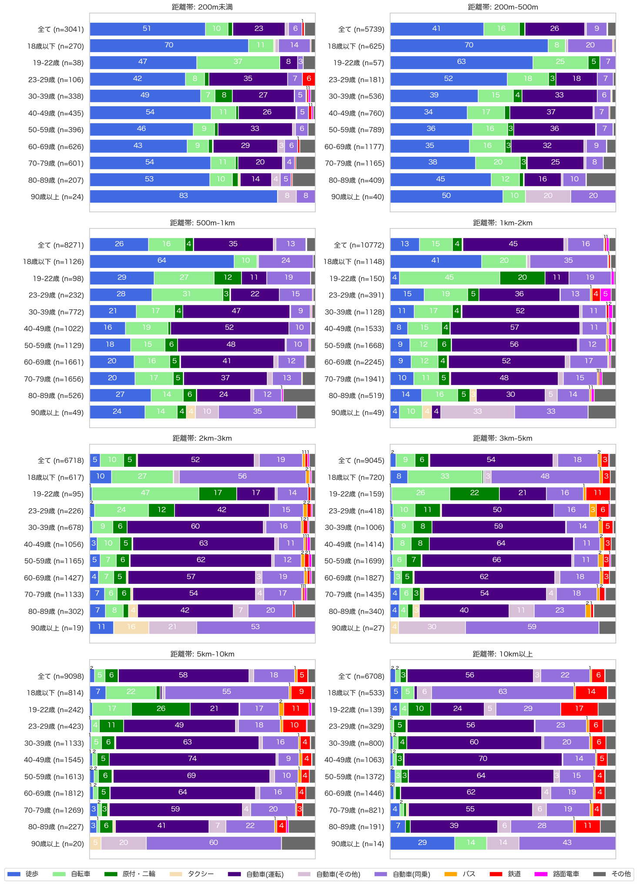

解説 7
距離帯・年齢別の交通手段分担率を図1に示します。

図1：年齢・距離別の交通手段分担率
200m未満の移動でも、23〜69歳の年代では、3割から4割程度の移動が自動車で行われています。 500mまでの移動では、徒歩と自転車による移動が全体の半分以上を占めますが、500m以上では自動車の割合が卓越し、500m-1kmでは50%、1km-2kmでは62%、2km-5kmでは73-74%、5km以上では約8割を占めます。
一方、若年層は徒歩と自転車で移動する距離が他の年代より顕著に長いです。 200m〜500mの移動について、29歳以下は70〜88%が徒歩と自転車で移動し、他の年代より20〜30%ほど高くなっています。 500m〜1kmの距離帯でも、18歳以下は74%、19〜22歳は56%、23〜29歳は59%が徒歩と自転車で移動します。 一方で、30歳代以上では、500m〜1kmの距離帯について、5割から6割の移動が自動車で行われます。
若年層の中距離の移動には、原付・二輪が多く使われることも特徴的です。 特に、19〜22歳の大学生の年代では、1km〜10kmの移動の2割から3割が原付・二輪であり、自転車と並んで若年層の中距離移動の重要な交通手段となっています。
3km以上の移動には、20歳代を中心に鉄道の利用が増加します。 特に、19〜22歳の3km〜5kmの移動や、29歳以下の5km〜10kmの移動の1割が鉄道によるものです。 路面電車は、23〜29歳の1km〜2kmの移動で5%を占め、1km〜3kmの距離帯の移動に比較的よく使われています。 これらのことから、20歳代以下の徒歩・自転車・公共交通を組み合わせた移動を、今後も継続してもらう政策的取り組みや、30歳代以上の年代にも広げていくことが、公共交通中心のまちづくりのために必要といえます。